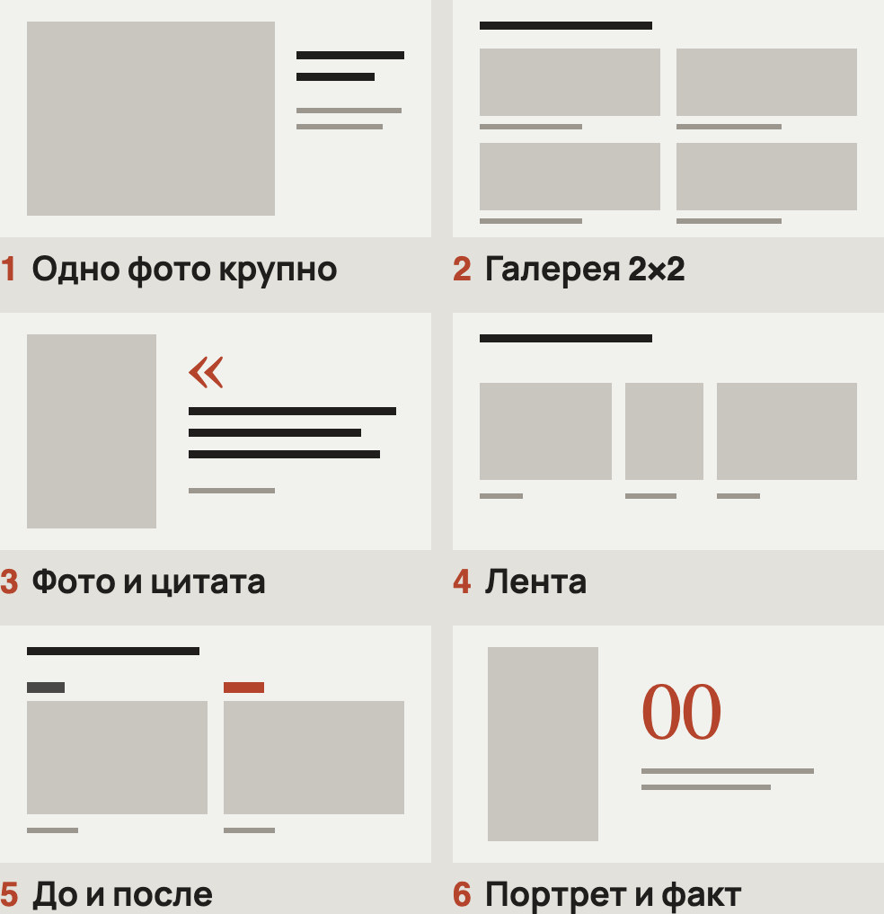
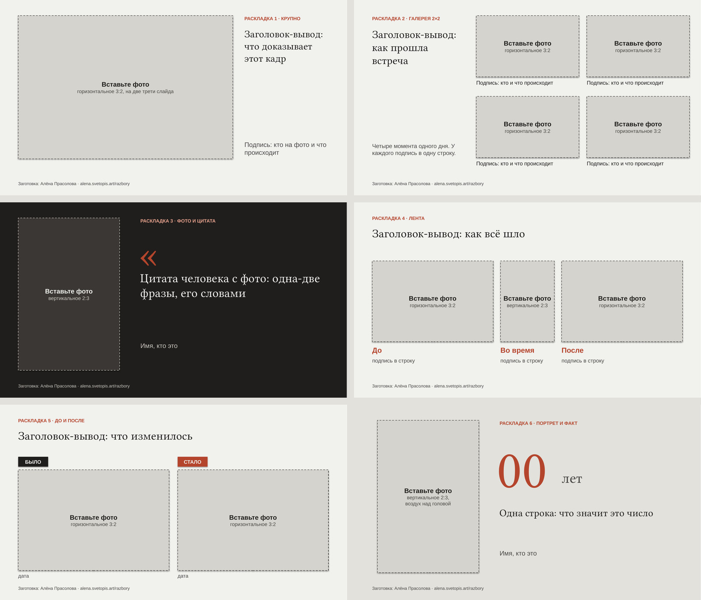
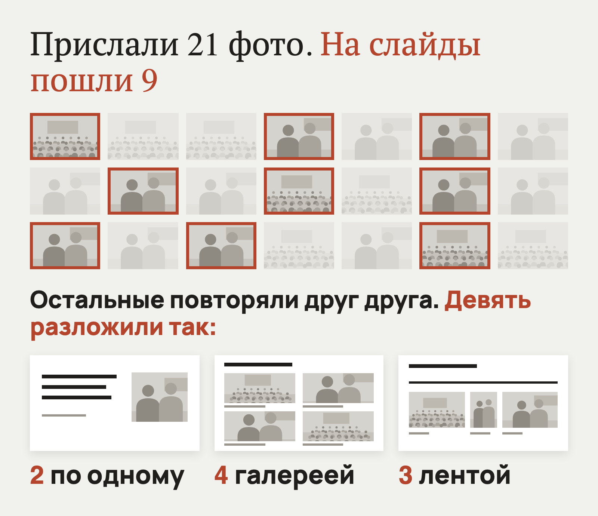

Разбор · слайды с фото
Оформление слайдов с фото: 6 раскладок, в которых никому не режут голову
Три правила фотографа и шесть раскладок: люди в кадре целиком.
Внутри бесплатный шаблон PowerPoint, 8 слайдов
Алёна Прасолова, фотограф, собираю презентации к выступлениям
17 ноября 2026 · 4 минуты чтения
Фото ставьте целиком, текст рядом со снимком, а не на лицах, у каждого кадра подпись. Потом выберите одну из шести раскладок. Ниже всё на настоящих фото и шаблон PowerPoint.


Знакомо: «вставила фото, а на слайде у всех отрезаны макушки»? Я фотограф и вижу такое сразу. Виноват не шаблон, а рамка, которая режет людей.
Откройте слайд с людьми и проведите взглядом по верхнему краю каждого фото. Край идёт по чьей-то голове? Рамка режет.
Три правила фотографа
- Не растягивать. Размер фото меняйте только за угол, иначе люди станут толще или выше. Проверка: лицо на слайде такое же, как в телефоне.
- Не резать людей рамкой. Квадраты и рамки шаблона срезают макушки, руки и крайних людей. Мало места: уменьшайте фото целиком. Обрезаете: не по запястьям и коленям, и оставьте воздух над головой.
- Не класть текст на лица. Текст ставьте рядом со снимком или на спокойную часть кадра: стену, небо, пол. Лучше туда, куда смотрит человек на фото: взгляд зала пойдёт за ним.
И подпись к каждому фото: кто на нём и что происходит. Фото без подписи зал разглядывает, фото с подписью понимает.
6 раскладок для слайдов с фото
1. Одно фото крупно
Один кадр сам доказывает мысль: полный зал, человек за делом. Фото на две трети слайда, рядом заголовок-вывод и подпись.
2. Галерея 2×2
Несколько моментов одного дня. Четыре фото с равными промежутками, под каждым подпись в строку. Больше четырёх не ставьте: с дальних рядов это пёстрые пятна.
3. Фото и цитата
Человек на снимке сказал важное. Фото слева, цитата крупно справа, под ней имя. Пусть человек смотрит в сторону цитаты. Цитата только настоящая и с разрешения.
4. Лента
Ход событий: до, во время, после. Три-четыре снимка в ряд, высота одна, ширина своя. Порядок не меняйте: в ленте он и есть смысл.
5. До и после
Работа видна глазами: ремонт, укладка, стенд. Два фото одного размера, по возможности с одной точки. «После» не делайте крупнее «до».
6. Портрет и факт
Нужно представить человека. Вертикальный портрет целиком на трети слайда, рядом крупно одно число или факт.
Снимки разной формы в одном ряду ставьте так: высота у всех одинаковая, ширина своя. Тогда ни один кадр не режется.
Шаблон «6 раскладок для слайдов с фото»: скачать бесплатно

Откроется прямо на телефоне, можно листать. 8 слайдов с подсказками.
Файл .pptx, 53 КБ, для компьютера. С телефона откройте в Google Slides, на Маке в Keynote.
PDF открывается в этой же вкладке, вернуться к статье: кнопка «Назад». Если файл скачался, он в загрузках. Ничего не произошло? Откройте эту страницу в обычном браузере: меню с тремя точками, пункт «Открыть в браузере».
Без регистрации и почты.
Как пользоваться: удалите серую рамку, вставьте на её место своё фото и тяните его только за угол.
Фото много, а какие ставить, непонятно? Пришлите снимки и текст, отберу и разложу. Черновик увидите до оплаты.
Как отобрать 10 фото из 40
- Уберите брак: смазанные, тёмные, с закрытыми глазами.
- Из похожих оставьте один, где лучше видны лица.
- Спросите у снимка, что он доказывает. Полный зал, работу руками, результат? Ничего не доказывает: уберите, даже если кадр красивый.
- Проверьте, согласны ли люди в кадре, особенно дети. Согласия нет: возьмите кадр без лиц.
- Разложите: самый сильный кадр крупно, моменты одного дня галереей, ход событий лентой.
Кейс: 9 фото из 21 для доклада

Анна Комарницькая, психолог и преподаватель, готовила доклад к XIV Международному симпозиуму медицинских антропологов в Москве, сентябрь 2026 года. Слайды собирали за сутки. Фото со встреч Анна присылала по ходу работы, всего 21.
- На слайды пошли 9 снимков, остальные повторяли друг друга.
- Два кадра встали по одному рядом с главными мыслями доклада.
- Четыре стали галереей «Живое общение вместо лекции», у каждого подпись.
- Три легли лентой под дорожной картой в конце.

Что получилось. 17 слайдов со схемами и фотографиями и памятка для зала. Успели к докладу.
«У меня завтра конференция, уровень высокий, а у меня один доклад, и получилось так красиво!»
Анна вернулась к нам уже пятый раз. Как из того же реферата получились схемы, рассказываю в разборе «3 ошибки, из-за которых слайды трудно читать».
Не хотите разбираться сами
Фото лежат в телефоне сотнями, а выступать послезавтра? Пришлите их мне: отберу снимки глазом фотографа и разложу по слайдам. Помощник (ИИ) собирает черновик слайдов, а я проверяю каждый своими глазами и довожу до ума.
от 1 500 ₽ презентация до 10 слайдов
В MAX и в Telegram отвечает бот-приёмщик. Слайды собираю и проверяю я сама.
Как это будет
- Нажимаете кнопку, открывается чат с ботом-приёмщиком.
- Бот задаёт пару вопросов про выступление и называет цену. До этого вы ничего не платите.
- Присылаете текст и фото и получаете черновик до оплаты. Готовая презентация за 1-2 дня, в заказе редактируемый файл PowerPoint.
Пример первого сообщения
Здравствуйте! Выступаю на педсовете в пятницу, 10 минут. Текст и фото пришлю следующими сообщениями.
Можно написать так или просто прислать фото.
Частые вопросы
Сколько фото можно поставить на один слайд?
Обычно одно, самое большее четыре. Хочется больше: сделайте два слайда-галереи. Мелкое фото на экране никто не разглядит.
Это работает в Google Slides?
Да. Правила те же: тянуть только за угол, не загонять в чужую рамку, подписывать. Шаблон тоже открывается в Google Slides.
Что делать, если фото плохого качества?
Поставьте его меньше, в галерею или ленту: в маленьком размере недостатки заметны меньше. На весь слайд тёмное или мутное фото не растягивайте.
Вопрос вам
Какой слайд с фото у вас сейчас не складывается? Проверьте его по трём правилам. Не вышло: пришлите фото, соберу за вас.
Алёна Прасолова. Фотограф, собираю презентации к выступлениям для педагогов, психологов, мастеров и малого бизнеса.